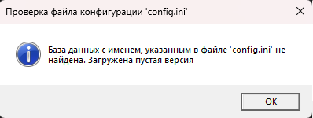
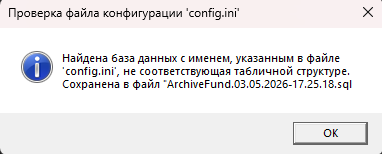

Эта ошибка возникает при запуске программы, если база данных с указанным в config.ini именем не существует или её структура (набор таблиц) не соответствует ожидаемой.

Рис. 1. Сообщение о том, что база данных не найдена
Как работает проверка при запуске
Программа выполняет следующие проверки:
1. Читает параметры из config.ini.
2. Проверяет существование базы данных с указанным именем.
3. Если база существует — проверяет, содержит ли она все необходимые таблицы: Boxes, DeletedDocuments, DeletedStudentsPersFiles, Documents, DocumentTypes, Group, Student, StudentsPersFiles, User.
Ситуация 1: База данных не найдена
Если база данных не найдена, программа:
— Показывает сообщение: «База данных с именем, указанным в файле 'config.ini' не найдена. Загружена пустая версия».
— Выполняет SQL-скрипт из файла ArchiveFund.06.clear.sql, который создаёт новую базу данных со всеми таблицами и начальными данными (пользователь Admin).
Ситуация 2: Структура базы данных не соответствует

Рис. 3. Сообщение о несоответствии структуры базы данных
Если база данных существует, но набор таблиц отличается от ожидаемого, программа:
1. Показывает сообщение: «Найдена база данных с именем, указанным в файле 'config.ini', не соответствующая табличной структуре. Сохранена в файл "..."».
2. Сохраняет существующую базу данных в резервный файл с именем: `[имя_базы].дд.мм.гггг-чч.мм.сс.sql`.
3. Удаляет старую базу данных.
4. Создаёт новую базу данных со структурой из файла ArchitectureFund.06.Clear.sql
Ситуация 3: Создание пользователя MySQL
Если в config.ini указан пользователь, которого нет в MySQL, программа автоматически:
— Создаёт нового пользователя с указанным логином и паролем.
— Предоставляет ему все привилегии на работу с базой данных ArchiveFund.
Что делать, если данные были потеряны при автоматическом восстановлении?
Если программа автоматически создала резервную копию перед пересозданием базы данных, вы можете восстановить её вручную:
1. Найдите файл с именем ArchiveFund.дд.мм.гггг-чч.мм.сс.sql в папке с программой.
2. Используйте функцию «Восстановить резервную копию» (раздел 3.2.2) для восстановления данных из этого файла.
3. Предупреждение: при восстановлении текущие данные будут перезаписаны данными из резервной копии.
Как избежать этой ошибки
— Не удаляйте и не переименовывайте таблицы в базе данных вручную.
— Используйте только программу для работы с данными, не вносите изменения напрямую через SQL-клиенты, если не уверены в результате.
— Регулярно создавайте резервные копии — это защитит данные в случае автоматической перезаписи.
— Убедитесь, что файл ArchiveFund.06.clear.sql находится в папке с программой — он необходим для создания базы данных.